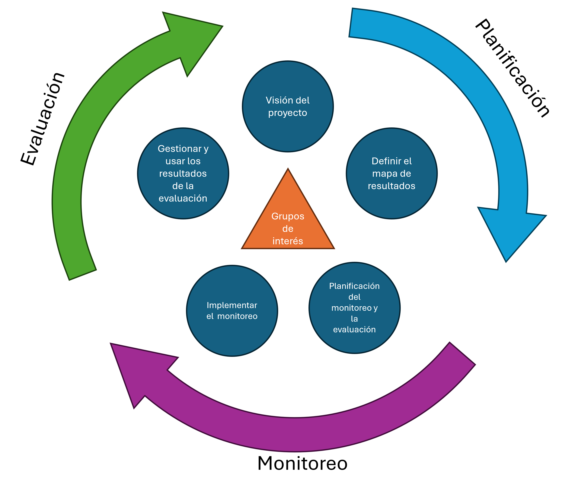
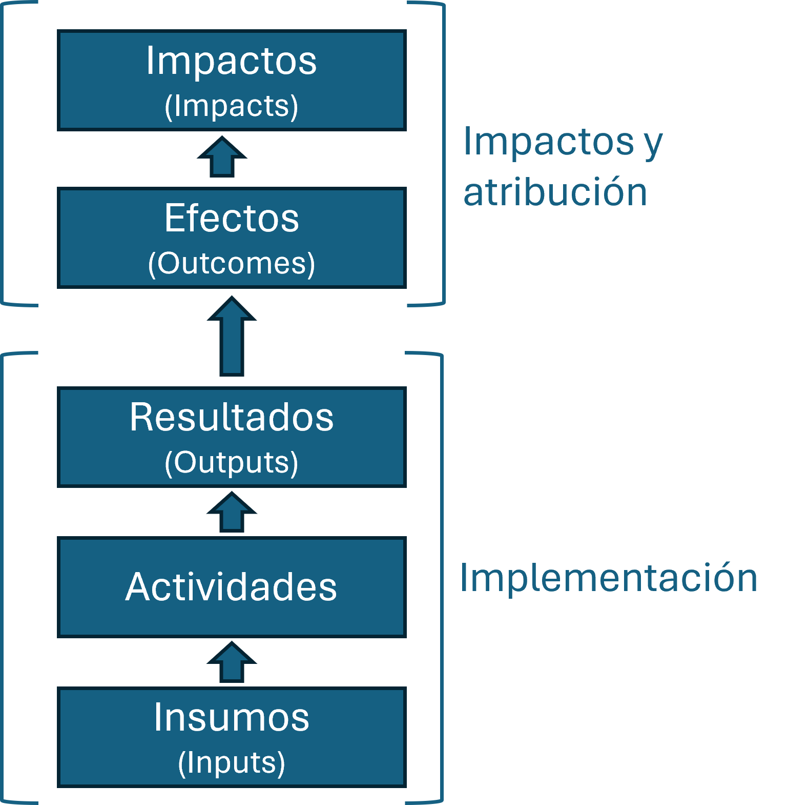
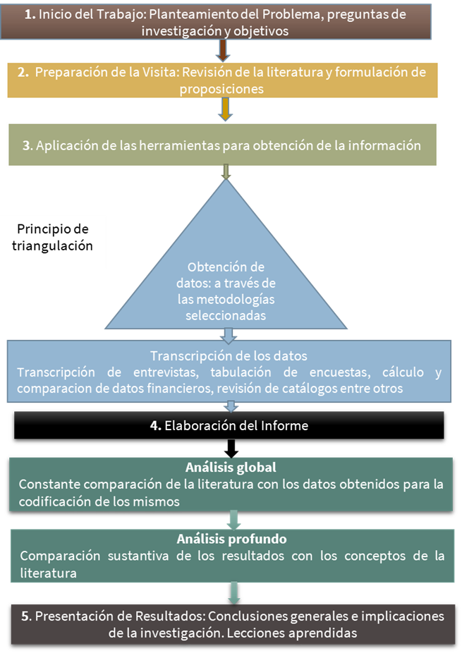
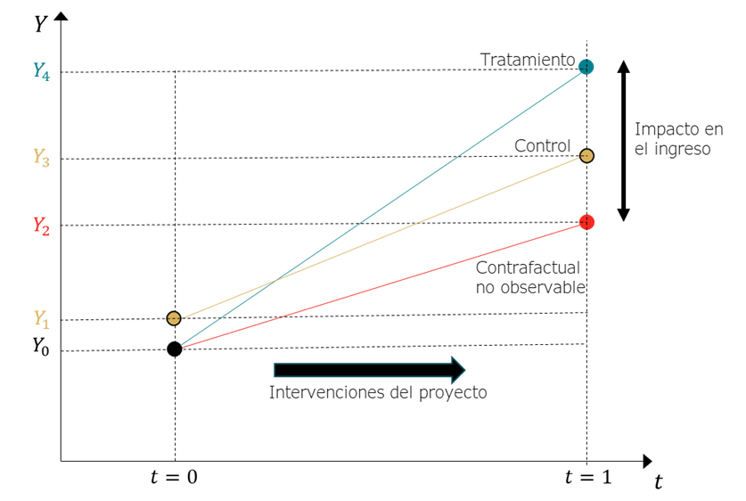

Guía de Bolsillo: Monitoreo y Evaluación de Proyectos
1 ¿Qué es esta guía?
El propósito de esta guía de bolsillo es proporcionar un resumen fácil de usar de los conceptos y prácticas clave de Monitoreo y Evaluación para una gestión basada en resultados efectiva en proyectos y programas.
La gestión basada en resultados se centra en resultados claramente definidos y en las metodologías y herramientas para medirlos y alcanzarlos. Por otra parte, contar con un buen sistema de Monitoreo y Evaluación (M&E) conduce a una gestión del proyecto de calidad, permitiéndonos implementar mejor nuestros programas, promover el aprendizaje organizacional, mantener la rendición de cuentas y la conformidad y ofrecer oportunidades para la retroalimentación de los interesados.
2 ¿Porqué el Monitoreo y la Evaluación (M&E) son importantes?
El Monitoreo y Evaluación es fundamental para garantizar el éxito de cualquier proyecto o programa. Proporciona evidencia clara de cuánto se ha logrado o no se ha logrado, utilizando tanto datos cuantitativos (números, porcentajes) como cualitativos (narrativos, observaciones). Esta evidencia promueve el análisis de tendencias, resaltar problemas y emitir señales de advertencia temprana, permitiendo la implementación de acciones correctivas necesarias para mantener el rumbo del proyecto.
Además, el M&E facilita la evaluación de la efectividad de las acciones de gestión, asegurando que los recursos se utilicen de manera eficiente y que los objetivos del proyecto se alcancen. Al proporcionar una visión clara del progreso y los resultados, el M&E ayuda a determinar si se han logrado los resultados esperados, promoviendo la transparencia y la rendición de cuentas a los donantes, socios y beneficiarios. En resumen, un buen sistema de M&E es esencial para la mejora continua y el éxito sostenible de los proyectos y programas.
3 M&E en el ciclo de vida del proyecto
Actualmente, los proyectos suelen ser administrados bajo una “Gestión Basada en Procesos” (GBP) que es una estrategia de gestión mediante la cual todos los actores, que contribuyen directa o indirectamente a alcanzar un conjunto de resultados, aseguran que sus procesos, productos y servicios contribuyan al logro de los resultados deseados (es decir, productos, resultados e impacto a nivel superior). Los actores, a su vez, utilizan información y evidencia sobre los resultados reales para informar la toma de decisiones sobre el diseño, la asignación de recursos y la entrega de programas y actividades para la rendición de cuentas y la elaboración de informes.

Adoptar la Gestión Basada en Resultados (GBR) implica un enfoque estratégico y metódico. Primero, se define claramente la meta del programa, es decir, su propósito o visión fundamental, y establecer los objetivos específicos que se pretenden alcanzar. Esta definición guiará todas las actividades subsecuentes y asegurará que todos los esfuerzos estén alineados con la visión global del programa.
Luego, es esencial implementar un sistema robusto de recolección de datos que debe capturar información detallada sobre la ejecución del programa y sus logros, lo que permite un seguimiento efectivo del progreso hacia los objetivos establecidos. La recopilación sistemática de datos facilitará la evaluación de la efectividad del programa e identificará áreas de mejora y oportunidades para la innovación.
Finalmente, la toma de decisiones dentro del programa debe ser informada y guiada por los datos recogidos. Analizar estos datos proporciona perspectivas sobre los resultados alcanzados, permitiendo ajustar las estrategias y tácticas de implementación. Este enfoque basado en evidencia asegura que las decisiones sean responsables y reflejen los aprendizajes obtenidos durante la ejecución del programa, maximizando así su impacto y eficacia.
4 Planificación y construcción de la Matriz de Resultados
Inicialmente necesitamos establecer sobre lo que se va a monitorear y evaluar. Los procesos de planificación quedan íntimamente vinculados al M&E pues definen las actividades, resultados, efectos e impactos que luego serán medidos. En este sentido, es necesario conocer muy bien qué es importante saber y porqué tanto para el personal del proyecto como para sus grupos de interés.
Para ordenar y dar coherencia a todos los tipos de resultados qu eel poryecto desea alcanzar, existen técnicas ampliamente conocidas como la matriz del Marco Lógico, la Teoría de Cambio y la Matriz de Resultados. Si bien estas metodologías se utilizan de acuerdo a las necesidades específicas de los proyectos, en la actualidad la Matriz de Resultados es una de las técncias más utyilizadas al ser acompañada de la Cadena de Resultados para establecer la lógica de causa-efecto necesaria en casi todos los casos.

Una cadena de resultados es la secuencia causal de una intervención de desarrollo que especifica los pasos necesarios para alcanzar los objetivos deseados. Esta cadena comienza con los insumos, continúa con las actividades y los resultados, y culmina en los efectos e impactos.
Esta cadena comienza con los insumos (inputs), que son los recursos necesarios para llevar a cabo el proyecto, y sigue con las actividades (activities), que son las acciones concretas realizadas utilizando estos recursos. De las actividades se derivan los resultados (outputs), que son los productos directos e inmediatos de las actividades implementadas.
Posteriormente, los resultados generan efectos (outcomes), que son los cambios observados en el corto y mediano plazo como consecuencia de los resultados. Finalmente, estos efectos culminan en impactos (impacts), que son los cambios a largo plazo y de mayor alcance que la intervención pretende lograr. La figura también destaca dos componentes clave del proceso: la implementación, que abarca desde los insumos hasta los resultados, y los impactos y atribución, que se centran en los efectos e impactos alcanzados.
Es necesario también, al armar una matriz de resultados, tomar en cuenta los riesgos y los supuestos bajo los que el proyecto se está planificando:
La matriz de riesgos tiene la sigueinte forma:
| Nivel | Resultados | Indicadores, línea base, meta | Medios de verificación | Riesgos y Suposiciones | Socios |
|---|---|---|---|---|---|
| Impacto | |||||
| Efectos | |||||
| Resultados | |||||
| Actividades | |||||
| Insumos |
- Cadena de Resultados: Identifica la fase en la cadena de resultados (insumos, actividades, resultados, efectos, impacto).
- Resultados: Descripción de los resultados esperados en cada fase de la cadena de resultados.
- Indicadores, línea base, meta: Indicadores utilizados para medir los resultados, incluyendo la línea base y las metas establecidas.
- Medios de verificación: Fuentes y métodos utilizados para verificar los indicadores.
- Riesgos y Suposiciones: Identificación de los riesgos potenciales y las suposiciones necesarias para alcanzar los resultados.
- Socios: Actores y organizaciones involucradas en la implementación y seguimiento del programa.
A continuación se muestra un ejemplo mínimo de como generar una matriz de resultados:
| Cadena de Resultados | Resultados | Indicadores, línea base, meta | Medios de verificación | Riesgos y Suposiciones | Socios |
|---|---|---|---|---|---|
| Impacto | Mejora en la inclusión laboral de personas discapacitadas. | % de personas discapacitadas empleadas, línea base: 20%, meta: 50%. | Informes de empleo del gobierno, encuestas a empleadores. | Riesgo: Discriminación persistente en el lugar de trabajo. Suposición: Apoyo continuo del gobierno y las empresas. | Ministerio de Trabajo, ONG locales, Empresas privadas |
| Efectos | Aumento de la capacidad y habilidades laborales. | % de personas que mejoran sus conocimientos, línea base: 30%, meta: 70%. | Registros de capacitación, encuestas de satisfacción. | Riesgo: Falta de interés en los programas de capacitación. Suposición: Disponibilidad de capacitadores calificados. | Centros de capacitación, ONGs educativas |
| Resultados | Personas discapacitadas participando activamente en capacitaciones. | % de asistencia a capacitaciones, línea base: 40%, meta: 80%. | Listas de asistencia, informes de progreso. | Riesgo: Barreras de accesibilidad. Suposición: Infraestructura adecuada disponible. | Instituciones educativas, Organizaciones comunitarias |
| Actividades | Implementación de programas de capacitación accesibles. | Número de programas implementados, línea base: 5, meta: 15. | Informes de actividades, evaluaciones de programas. | Riesgo: Falta de financiamiento. Suposición: Financiamiento sostenible y continuo. | Organizaciones financieras, Donantes |
| Insumos | Recursos financieros y humanos asignados. | Presupuesto asignado, línea base: $100,000, meta: $300,000. | Informes financieros, registros de recursos humanos. | Riesgo: Recursos insuficientes. Suposición: Compromiso de financiamiento por parte de los patrocinadores. | Donantes, Gobiernos locales, Inversores |
5 Construcción de un Sistema de M&E
Una vez contamos con la claridad suficiente del proyecto y los indicadores definidos, procedemos a armar el sistema de monitoreo.
5.1 Línea de base
Una “línea base” se refiere a las mediciones de las condiciones clave (indicadores) antes de que comience un proyecto, a partir de las cuales se puede evaluar el cambio y el progreso. Sin datos de línea base, puede ser muy difícil planificar, monitorear y evaluar el desempeño futuro. Típicamente, los valores de línea base deben determinarse antes de iniciar un proyecto/programa para que reflejen verdaderamente las condiciones previas al proyecto y así, más adelante, se pueda comparar y determinar qué diferencia ha hecho el proyecto. A veces se requiere un estudio de línea base mucho antes del inicio del proyecto para informar el desarrollo/propuesta del proyecto, por ejemplo, como parte de los requisitos del donante para informar decisiones de inversión. Pero típicamente, el estudio de línea base se realiza después de la evaluación de necesidades del proyecto y cuando el diseño del proyecto identifica los indicadores específicos que se medirán para las condiciones de línea base.
A veces los datos de línea base están disponibles, mientras que otras veces se necesita un estudio de línea base para determinar las condiciones iniciales. No hay una sola manera de realizar un estudio de línea base, y dependerá de una variedad de factores específicos del proyecto, que van desde indicadores específicos hasta tiempo y presupuesto. A continuación se muestran los lineamientos clave para establecer (o no) una línea de base
No se necesita un estudio de línea base. A veces, los datos de línea base ya se conocen. Por ejemplo, con un indicador para un proyecto de preparación para desastres, “# de comunidades que han realizado una evaluación de capacidad de vulnerabilidad,” ya puede ser conocido que ninguna comunidad ha realizado una, y por lo tanto, el valor es “0.” A veces, los datos de línea base ya están disponibles a partir de datos secundarios, como la evaluación de necesidades del proyecto u otros recursos externos confiables.
Se necesita un estudio de línea base “ligero”. A veces, el número de indicadores de línea base y los métodos para medirlos no son excesivos en tiempo, capacidad y recursos. Por ejemplo: los datos secundarios pueden estar disponibles; métodos cualitativos menos costosos, como entrevistas individuales o grupales, pueden ser adecuados; encuestas relativamente fáciles y de bajo costo, como encuestas en línea.
Se necesita un estudio de línea base “duro”. A veces es necesario tener un estudio de línea base más riguroso. Por ejemplo, el indicador para un proyecto de agua/saneamiento, “% de niños en comunidades objetivo menores de 3 años con diarrea en las últimas dos semanas,” puede requerir una encuesta a hogares junto con otros indicadores de línea base, lo que podría implicar desarrollar un cuestionario, determinar el método de muestreo, capacitar a los encuestadores y analizar estadísticamente los datos.
Reconstrucción de Datos de Línea Base. A veces, y de manera más común de lo que debería serlo, se necesita un estudio de línea base, pero no se realizó antes o cerca del inicio del proyecto. Esto puede ocurrir por una variedad de razones, pero hay algunos métodos para reconstruir las mediciones de línea base, tales como el uso de información secundaria, y proyecciones de indicadores de proyectos pasados, entre otras.
5.2 El Plan de Monitoreo y Evaluación
Los planes de M&E a veces se conocen con diferentes nombres según los usuarios, como “tabla de planificación de indicadores” o “plan de recolección de datos”. Aunque los nombres (y formatos) pueden variar, la función general sigue siendo la misma: detallar los requisitos para la medición de cada indicador y suposición. El Plan de M&E no solo ayuda a medir de manera realista los indicadores y suposiciones; esto, a su vez, ayuda a planificar de manera realista la implementación del programa.
A continuación se muestra un ejemplo del formato el Plan de M&E, con definiciones de cada columna y un ejemplo de un indicador y suposición:
| Indicadores (y suposiciones) | Definición del indicador (y unidad de medida) | Métodos/Fuentes de recolección de datos | Frecuencia y calendario | Persona(s) responsable(s) | Uso de la información/Audiencia |
|---|---|---|---|---|---|
| % de empleo de personas discapacitadas | Porcentaje de personas discapacitadas empleadas. | Encuestas a empleadores, registros de empleo. | Trimestral | Coordinador del Proyecto | Informes de empleo del gobierno, encuestas a empleadores. |
| Apoyo continuo del gobierno y las empresas | Se espera que el gobierno y las empresas continúen apoyando el programa. | Análisis de políticas, entrevistas con partes interesadas. | Anual | Equipo de M&E | Informes de políticas, entrevistas. |
Indicadores (y suposiciones): Esta columna enumera los indicadores, que pueden ser cuantitativos (numéricos) o cualitativos (observaciones descriptivas) y se toman típicamente directamente del marco lógico.
Definición del indicador (y unidad de medida): Define los términos clave en el indicador para una medición precisa y explica cómo se calculará el indicador. También debe anotar cualquier desagregación, es decir, por sexo, edad o etnia.
Métodos/Fuentes de recolección de datos: Esta columna identifica las fuentes de información y los métodos/herramientas de recolección de datos. Debe indicar si las herramientas de recolección de datos (encuestas, listas de verificación) existen o necesitan desarrollarse.
Frecuencia y calendario: Esta columna identifica la frecuencia con la que se recogerán los datos, es decir, mensualmente, trimestralmente o anualmente. También identifica cualquier cosa que se deba programar, como los plazos para desarrollar herramientas.
Persona(s) responsable(s): Identifica a las personas responsables y encargadas de las mediciones de los indicadores. Los nombres y títulos de las personas deben ser listados para fomentar la rendición de cuentas.
Uso de la información/Audiencia: Esta columna identifica el público objetivo y el uso de los datos, es decir, monitoreo, evaluación o informes a los responsables de la toma de decisiones o donantes. Cuando sea necesario, debe indicar cómo se formatearán los hallazgos (es decir, informes o presentaciones) y se difundirán.
5.3 La Tabla de Seguimiento de Indicadores
Una tabla de seguimiento de indicadores se utiliza para monitorear el desempeño real de los indicadores. Mientras que el plan de M&E se prepara para medir los indicadores de manera realista, la tabla de seguimiento de indicadores es donde se registran las mediciones continuas de los indicadores. Por lo tanto, la ITT es una herramienta importante para la elaboración de informes basados en evidencia.
| Indicador / Suposición | Definición del indicador (y unidad de medida) | Línea Base | Meta | Frecuencia | Responsable | Resultados Actuales | Comentarios |
|---|---|---|---|---|---|---|---|
| % de empleo de personas discapacitadas | Porcentaje de personas discapacitadas empleadas. | 20% | 50% | Trimestral | Coordinador del Proyecto | 30% | Progreso adecuado |
| Apoyo continuo del gobierno y las empresas | Se espera que el gobierno y las empresas continúen apoyando el programa. | N/A | N/A | Anual | Equipo de M&E | Apoyo sostenido | Evaluaciones políticas positivas |
5.4 Reportes
La elaboración de reportes o informes es la parte más visible del sistema de M&E, donde los datos recopilados y analizados se presentan como información útil para los interesados. A continuación, se resumen los elementos clave de una buena elaboración de informes:
Identificación de necesidades y audiencia: Los informes deben prepararse para un propósito o audiencia específica, lo que informa sobre el contenido, formato y momento adecuado para el informe.
Determinación de la frecuencia de los informes: Es importante identificar cuándo se necesita la información y establecer plazos realistas para la elaboración y distribución de los informes, considerando el tiempo, los recursos y la capacidad disponibles.
Roles y responsabilidades: Es importante identificar específicamente a las personas responsables de cada tipo de informe. Formato adecuado: Los formatos de los informes deben ser apropiados para los usuarios previstos.
Completitud: Los informes deben proporcionar una cantidad suficiente de información para su uso previsto, y es especialmente importante seguir cualquier requisito de informe.
Consistencia: Los informes deben adoptar unidades y formatos que permitan la comparación a lo largo del tiempo, permitiendo rastrear el progreso contra los indicadores, metas y otros hitos acordados.
Sencillos y fáciles de usar: El lenguaje y el formato del informe deben ser claros, concisos y fáciles de entender.
6 La evaluación
Uno de los principales desafíos de los tomadores de decisiones es el de analizar cuál de todos los tipos de evaluaciones disponibles es la más adecuada para el tipo de proyecto (de acuerdo con sus objetivos y alcances). Cabe recalcar que no existe una única solución o “receta” para estas decisiones.
Por ejemplo, muchas veces una comparación antes - después es válida para el análisis de impacto, ya que la atribución es muy obvia, por lo que no hay necesidad de un grupo de comparación. Si bien estos casos no son muy comunes, es posible encontrar, por ejemplo, proyectos de suministro de agua dónde se mide el impacto en el tiempo necesario para buscar agua: el tiempo que los hogares dedicaban a buscar agua puede reducirse una vez que se instalan las bombas de agua; la atribución al proyecto puede ser directa si no hay otro factor causal factible, por lo que la comparación antes y después nos dice el impacto real.
En otros casos, sobre todo en proyectos con que buscan un impacto social alto (en términos de resiliencia, participación en espacios de decisión, temáticas de género), es necesario optar por evaluaciones cualitativas que muestren los cambios a niveles más personales del grupo meta, como es el caso de empoderamiento de las mujeres. A continuación se muestra una comparación de las principales diferencias entre las aproximaciones cuantitativas y cualitativas hacia la evaluación de proyectos.
| Categoría | Evaluación cuantitativa | Evaluación cualitativa |
|---|---|---|
| Datos | Números | Palabras |
| Métodos de recolección de datos | Opciones predefinidas y preguntas cerradas en encuestas, medición directa, toma de datos digitales | Preguntas abiertas en encuestas y entrevistas, grupos focales, debates, observación, estudios de casos |
| Análisis | Métodos estadísticos, aproximaciones experimentales o cuasi experimentales | Resumen, reducción y puntuación; análisis en profundidad de casos individuales |
| Muestreo | Amplio, muestras aleatorias | Intencionado, muestreo de los casos exitosos |
| Indicadores | Indicadores numéricos específicos y medibles | Indicadores cualitativos o preguntas ampliamente definidas |
| Línea de base | Recopilación numérica y presentación de datos | Recopilación narrativa y presentación de datos provenientes de fuentes no necesariamente con significancia estadística |
| Grupos de control o comparación | Utilizados frecuentemente en métodos experimentales o cuasi experimentales | Raramente utilizados |
| Preguntas “típicas” | ¿Cuánto costó? ¿Cuántos beneficiarios? ¿Con qué frecuencia? | ¿Cómo o por qué sucedió algo? ¿Para quién? |
| Almacenamiento y procesamiento de datos | Datos almacenados como números; gran cantidad de procesamiento automático | Datos almacenados como palabras o como informes adjuntos; menos procesamiento automático |
Muchos proyectos optan por combinar evaluaciones cualitativas y cuantitativas, para obtener lo mejor de ambos mundos y poder matizar los resultados alcanzados con evaluaciones que muestren la magnitud del impacto en casos particulares.
6.1 Evaluaciones cualitativas
Las evaluaciones cualitativas describen la relación entre una intervención y sus efectos sobre la población de interés. Además, puede proporcionar una rica comprensión de los contextos, el proceso, el evento o la situación y explicar por qué se produjeron resultados.
Los métodos cualitativos favorecen la observación naturalista y las entrevistas. Como tales, implican un grado de cercanía y ausencia de condiciones controladas que contrastan con la distancia y el control de los estudios científicos tradicionales. La investigación cualitativa se basa en un supuesto de “sistemas abiertos” donde el contexto de observación (y el observador) es parte del estudio en sí, además de enfocarse en las preguntas ¿por qué? y ¿cómo? Por el contrario, la investigación cuantitativa favorece un enfoque de sistema cerrado en el que se hace todo lo posible para neutralizar los efectos del contexto de observación (incluido el observador)
Una de las técnicas más utilizadas para la evaluación cualitativa, entre muchas otras, es el estudio de caso, que buscan ahondar en los beneficios del proyecto desde un punto de vista personal, es decir, desde una mirada puramente del beneficiario y cómo las acciones del proyecto, les han generado cambios positivos (o negativos).

Este proceso comienza con la Iniciación del Trabajo, que incluye el planteamiento del problema, preguntas de investigación y objetivos. Sigue con la Preparación de la Visita, que implica la revisión de la literatura y la formulación de proposiciones. Luego, se pasa a la Aplicación de Herramientas para obtener información, seguido de la Obtención de Datos a través de metodologías seleccionadas y la Transcripción de Datos.
A continuación, se realiza la Elaboración del Informe, que incluye un Análisis Global, comparando constantemente la literatura con los datos obtenidos para su codificación, y un Análisis Profundo, comparando los resultados con los conceptos de la literatura. Finalmente, se lleva a cabo la Presentación de Resultados, donde se concluyen y se presentan las implicaciones de la investigación y las lecciones aprendidas. Este proceso se basa en el Principio de Triangulación, asegurando la validez y la confiabilidad de los datos. Después de la elaboración del informe, que organiza y detalla los hallazgos clave, se realiza la presentación de resultados. Esta etapa incluye un análisis global, comparando la literatura con los datos obtenidos, y un análisis profundo, comparando los resultados con conceptos literarios. Finalmente, se concluye con la presentación de las conclusiones y lecciones aprendidas, destacando las implicaciones de la investigación para futuras prácticas y estudios.
6.2 Evaluaciones cuali-cuantitativas: Metodología OCDE
Las normas de evaluación para la ayuda al desarrollo, establecidas en 1991 por el Comité de Asistencia para el Desarrollo (CAD) de la Organización para la Cooperación y el Desarrollo Económicos (OCDE), han sido el trabajo más influyente en el campo de la evaluación del desarrollo.
A partir del aprendizaje recopilado durante 25 años de aplicación de los criterios, la comunidad de evaluación global comenzó a discutir la revisión de los criterios después del acuerdo de 2015 de la Agenda 2030 para el Desarrollo Sostenible, incluidos los Objetivos de Desarrollo Sostenible (la Agenda 2030), y el Acuerdo de París dentro de la Convención Marco de las Naciones Unidas sobre el Cambio Climático (Acuerdo de París). De esta forma, el estándar se modifica y actualiza (OECD, 2019) de acuerdo con los criterios detallados a continuación.
| Criterios de evaluación | Conceptualización |
|---|---|
| Relevancia | Medida en que los objetivos y el diseño de la intervención responden a las necesidades, políticas y prioridades de los beneficiarios, a nivel mundial, nacional e institucional, y continúan haciéndolo si las circunstancias cambian |
| Coherencia | Compatibilidad de la intervención con otras intervenciones en un país, sector o institución |
| Impacto | Cambios de largo plazo, positivos y negativos, primarios y secundarios, producidos directa o indirectamente por un proyecto de inversión pública, se asocia con los fines de éste. Medida en que la intervención ha generado o se espera que genere efectos significativos, positivos o negativos, intencionados o no, de nivel superior |
| Eficiencia | Medida en que los recursos / insumos (fondos, tiempo, etc.) se han convertido económicamente en productos (output) del proyecto, se asocia con los componentes de un proyecto de inversión pública |
| Eficacia | Medida en que la intervención logró, o se espera que logre, sus objetivos y sus resultados, incluidos los resultados diferenciales entre los grupos. Medida en que se lograron o se espera lograr los objetivos del proyecto de inversión pública, se asocia al propósito de éste y a los fines directos |
| Sostenibilidad | Medida en que los beneficios netos de la intervención continúan, o es probable que continúen. Continuidad en la generación de los beneficios de un proyecto de inversión pública a lo largo de su período de vida útil. se asocia con el mantenimiento de las capacidades para proveer los servicios y el uso de éstos por parte de los beneficiarios |
Estos criterios son generalmente evaluados utilizando técnicas cualitativas (para analizar la relevancia y coherencia del proyecto), técnicas cuantitativas (para analizar el impacto y la sostenibilidad) y además la revisión de los reportes e indicadores de Monitoreo (para analizar eficiencia y eficacia).
6.3 Evaluaciones cuantitativas (de impacto)
En las secciones anteriores se han desarrollado metodologías cuali-cuantitativas que pretenden evaluar un proyecto desde una perspectiva holística, es decir, buscan dar una mirada global al desarrollo del proyecto, desde el planteamiento de sus objetivos y su alineación con la política pública del país, hasta un primer acercamiento a los impactos generados. Si bien este tipo de evaluación es suficiente para proyectos cuyos impactos son de fácil medición, pueden existir proyectos cuyos resultados no son tan evidentes.
En este tipo de proyectos, en los cuales no se tienen referencias pasadas de su efectividad y eficiencia, es decir, que no se tiene certeza del impacto que generarán, se hace necesario un tipo de evaluación más estricta, a través de la cual se pueda discernir si los proyectos están generando los efectos previstos, si su costo es menor a los beneficios que se generan y cómo los cambios en el bienestar son atribuibles al proyecto o intervención en particular.
La atribución es el concepto más importante, para iniciar una evaluación de impacto, pues queremos estar seguros de que es el proyecto el que realmente está generando cambios en los indicadores de interés de la población objetivo. Para medir esta atribución, se hace necesario el análisis y comparación contra una situación en la que el proyecto no hubiera existido (¿qué hubiera pasado con los beneficiarios si el proyecto no se hubiera implementado?). El resultado de un beneficiario en ausencia de la intervención sería su contrafactual.
El problema de la evaluación es que, si bien el impacto del programa (independientemente de otros factores), solo puede evaluarse verdaderamente comparando los resultados reales y los contrafactuales, no se observa el contrafactual (un contrafactual perfecto implicaría que un beneficiario acceda al proyecto y que, al mismo tiempo, no lo haga, lo cual es evidentemente imposible). Por lo tanto, el desafío de una evaluación de impacto es crear un grupo de comparación (control) convincente y razonable para los beneficiarios a la luz de estos datos faltantes. Encontrar un contrafactual apropiado constituye el principal desafío de una evaluación de impacto.
A continuación se ilustra este concepto. Analizamos un indicador de interés Y que puede ser ingreso, nivel de educación, empleo o cualquier otro indicador proveniente de la matriz de resultados del proyecto.

Entonces los beneficiarios del proyecto, llamado el grupo de tratamiento parten de un indicador de impacto \(Y_0\) (en un \(t=0\), antes de que el proyecto inicie sus operaciones) y, una vez se realizan las intervenciones, acciones y actividades del proyecto, se realiza una nueva medición y se constata que el indicador de los beneficiarios es ahora \(Y_4\). El evaluador estaría tentado a indicar que esta diferencia \(Y_4-Y_0\) es el impacto generado por el proyecto. Sin embargo esto no puede ser cierto, dado que es posible que otros innumerables factores podrían haber incrementado el indicador estudiado.
Para poder atribuir cierta cantidad de este incremento de \(Y_0 a Y_4\), tendríamos que analizar qué hubiera pasado si los beneficiarios no hubieran participado del proyecto, y así contar con un contrafactual perfecto y medir el punto \(Y_2\). Si pudiéramos “desdoblar en otra dimensión” a los beneficiarios y medir su indicador sin proyecto, podríamos obtener \(Y_2\), y a partir de la diferencia \(Y_4-Y_2\), encontrar el impacto “real” del proyecto en la población.
Sin embargo, sabemos que es imposible que una persona esté y no esté, al mismo tiempo, en un proyecto. Entonces debemos encontrar un grupo de comparación adecuado que imite al contrafactual perfecto, es decir que se comporte de la manera más parecida posible a cómo se hubieran comportado los beneficiarios en caso de no haber accedido al proyecto. Entonces, ¿la diferencia \(Y_4-Y_3\) es el verdadero impacto del proyecto? Sin saber por qué algunos hogares participaron mientras que otros no cuando el proyecto puso el proyecto a disposición de un municipio, tal comparación podría ser engañosa. Sin dicha información, no se sabe si Y_3 es el resultado contrafactual correcto para evaluar el efecto del proyecto.
Si se conocen los resultados contrafácticos (\(Y_0\), \(Y_2\)), la estimación real del efecto del programa es \(Y_4-Y_2\) y no \(Y_4-Y_3\). En este ejemplo, el contrafactual con grupo de control produce una subestimación del efecto del programa, la cual también podría producir una sobreestimación del impacto del proyecto, en otras situaciones.
Las evaluaciones de impacto exitosas dependen de encontrar un buen grupo de comparación. Hay dos enfoques amplios a los que recurren los investigadores para imitar el contrafactual de un grupo tratado: (a) crear un grupo de comparación a través de un diseño estadístico, o (b) modificar la estrategia de focalización del programa mismo para eliminar las diferencias que han existido entre los grupos tratados y no tratados antes de comparar los resultados entre los dos grupos. Ambas estrategias buscan eliminar de la mejor manera posible, las diferencias entre el contrafactual real y el grupo de comparación con el que se puede contar.
Es posible utilizar varios métodos diferentes en la teoría de la evaluación del impacto para abordar la cuestión fundamental del contrafactual. Cada uno de estos métodos conlleva sus propios supuestos sobre la naturaleza del posible sesgo de selección en la selección de objetivos y la participación en el programa, y los supuestos son cruciales para desarrollar el modelo apropiado para determinar los impactos del programa.
El análisis de impacto requiere el conocimiento de técnicas que puedan proveer una sólida base para afirmar la causalidad y la atribución del proyecto. Entre la técnicas más utilizadas están las de “Diferencias en diferencias” y el “Propensity Score Matching” o “Emparejamiento”.
El método de “Diferencias en diferencias” compara los cambios en resultados antes y después de la intervención entre un grupo de tratamiento y un grupo de control, ayudando a aislar el efecto del proyecto. El “Propensity Score Matching” empareja beneficiarios y no beneficiarios con características similares para comparar sus resultados, controlando así por diferencias observables y mejorando la estimación causal del impacto del proyecto.